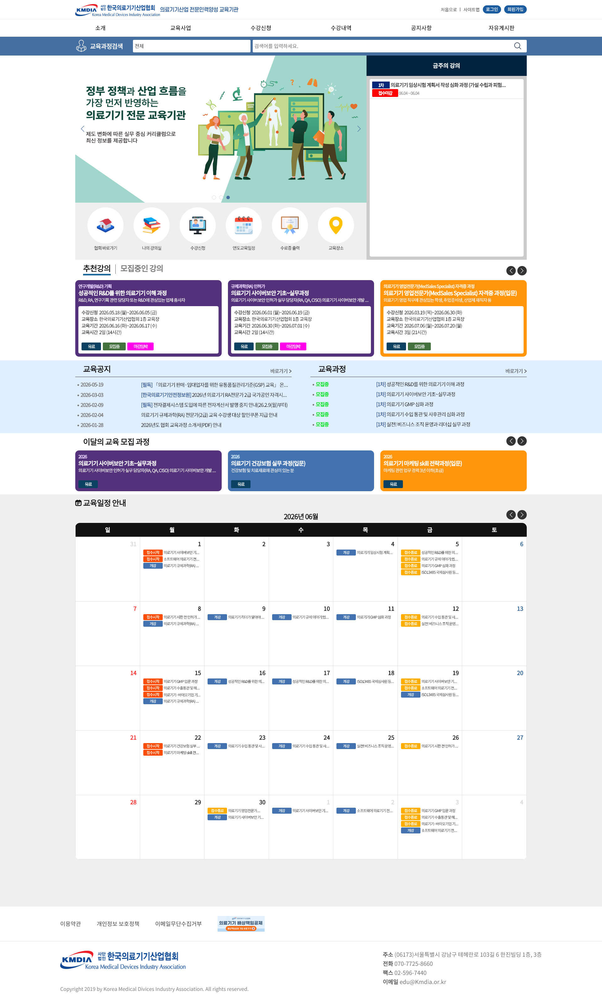
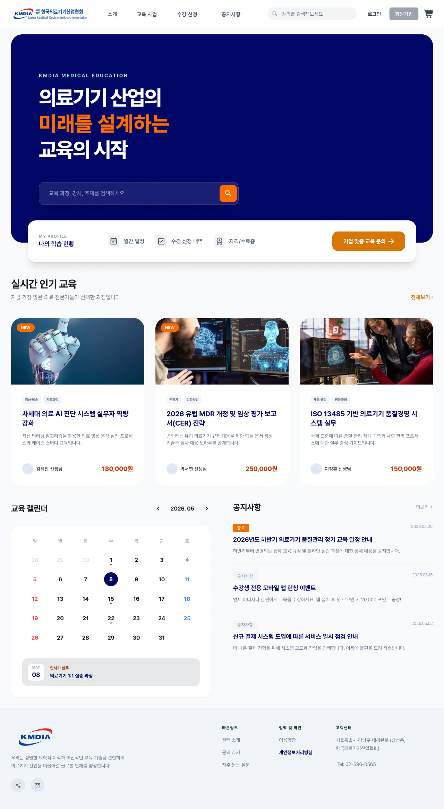
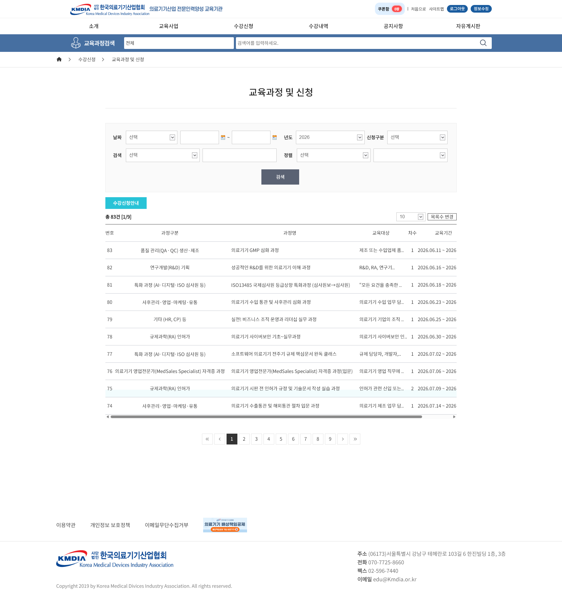
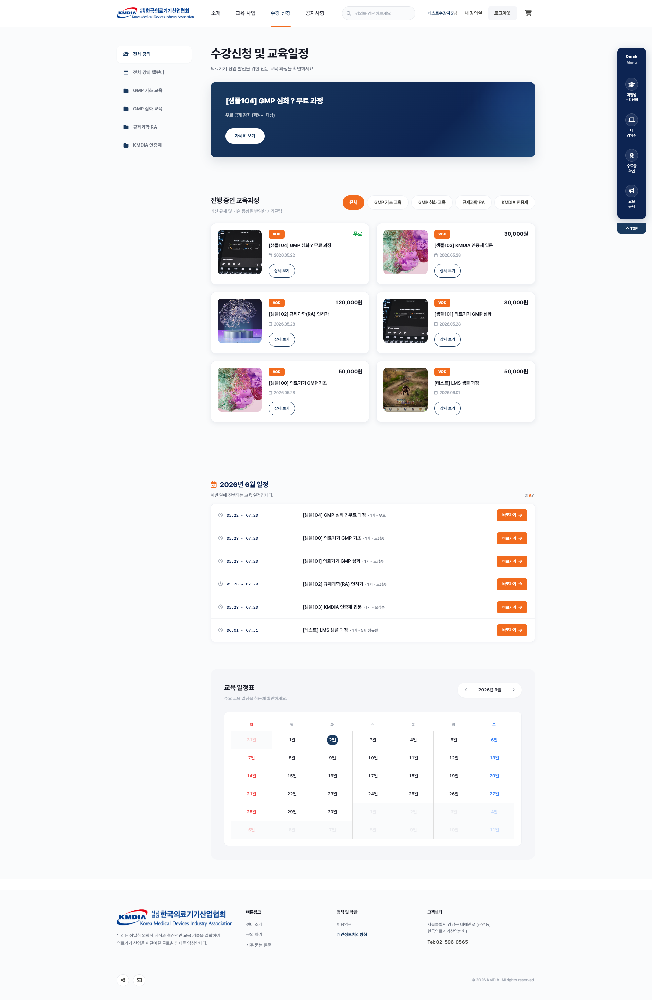
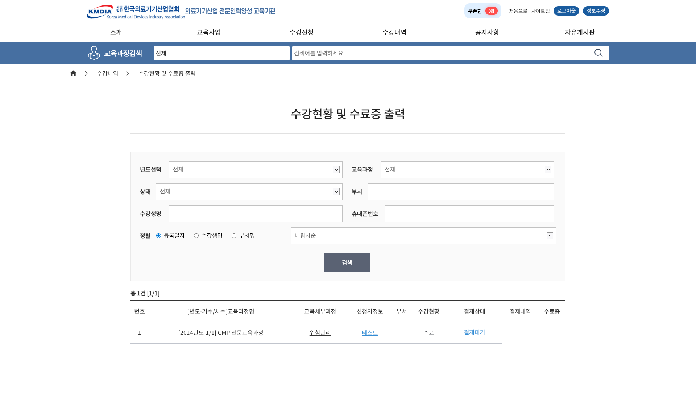
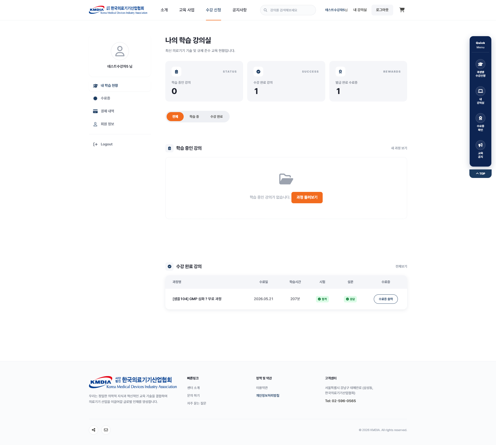

1. 프로젝트 개요
- 역할: 사용자 화면은 IA 설계·화면 기획부터 퍼블리싱까지 단독 수행. 관리자(어드민) 화면은 기능 정의·화면 설계까지 수행 후 설계서 기반으로 내부 구현에 인계.
- 프로젝트 개요: 의료기기 산업 의무 교육 및 직무 교육의 온라인화, 수강 관리 및 행정 프로세스 자동화를 위한 온라인 교육 전용 통합 LMS(학습관리시스템) 신규 구축 프로젝트
주요 업무 및 성과
- E-러닝 유저 저니 최적화: 온보딩부터 수강 신청(커머스형 탐색), 동영상 학습, 퀴즈/평가, 수료증 자동 발급까지 이어지는 핵심 엔드투엔드(End-to-End) 유저 플로우 기획 및 UX 설계
- 학습 효율 중심의 마이페이지 통합: 사용자가 학습 진도율을 직관적으로 인지하고 증빙 서류를 스스로 관리할 수 있는 대시보드 환경을 조성하여 실무진의 CS 운영 리소스 방어
- 백오피스(어드민) 프로세스 구조화: 강좌 등록, 수강생 이력 관리, 결제 내역 확인, 통계 산출 등 교육 운영 효율화를 위한 관리자 시스템 기능 정의 및 화면 설계. 설계서(와이어프레임)를 작성해 내부 구현 담당자에게 인계하고, 설계 의도가 유지되도록 조율
- 안정적인 반응형 퍼블리싱 구현: 다중 기기 화면 깨짐 방지 및 브라우저별 안정적 영상 재생을 위해 프론트엔드 연동을 고려한 100% 반응형 클린 코드 퍼블리싱 수행
- 작업 규모: 사용자 화면 10종(메인, 수강 신청, 나의 강의실, 온라인 교육사업 소개 등) 기획부터 퍼블리싱까지 단독 수행
2. 배경 및 문제 정의
기존 오프라인 중심의 교육 운영을 온라인으로 확장하기 위해, 교육을 '쇼핑'하듯 탐색하고 스스로 '관리'할 수 있는 유저 친화적 온라인 학습 플랫폼의 필요성이 대두되었습니다.
학습자(User) 측면
- 수강신청·교육과정 목록이 조건 검색+텍스트 표 중심으로 제공되어, 썸네일·가격 등 비교 정보 없이 강의를 탐색해야 하는 직관성 저하 및 이탈 발생
- 진도율 파악·수료증 발급을 위해 여러 단계의 메뉴(Depth)를 거쳐야 하는 UX 병목 존재
관리자(Admin) 측면
- 수강생의 단순 진도율 확인·수료증 재발급 관련 유선 문의가 잦아, 교육 운영팀의 행정 리소스와 CS 피로도가 지속 누적
3. 프로젝트 목표 및 핵심 타겟 지표
- 강의 탐색 효율화: 텍스트 표 중심의 수강신청 목록을 썸네일·가격·모집상태가 보이는 카드형 UI로 개선하여, 원하는 강의를 찾는 탐색 시간 단축 및 수강 신청 진입률 향상
- CS 운영 공수 절감: '나의 강의실 대시보드'와 '원클릭 수료증 발급' 도입으로 행정팀에 집중되던 오퍼레이션 업무를 시스템으로 자동화·분산
- 크로스 플랫폼 학습 환경 보장: 디바이스 제약 없는 반응형 퍼블리싱으로 스마트폰·태블릿 수강 접근성 및 학습 유지율(Retention) 극대화
4. 탐색과 전환을 돕는 커머스형 메인 & 수강 신청
텍스트 표 중심의 딱딱한 수강신청 UI를 벗어나, 최신 에듀테크(EdTech) 및 커머스 플랫폼의 UX를 차용하여 강의의 상품성을 시각적으로 극대화했습니다.
기존 오프라인 교육 안내 홈페이지와, 이번에 신설한 온라인 교육 전용 LMS. 초기엔 온라인 전환이 목표였으나 이해관계자 협의로 두 채널을 분리 운영하기로 결정, 온라인 교육용 LMS를 새로 설계·구축함. (아래 비교는 ‘기존 오프라인 홈페이지’와 ‘신설 온라인 LMS’를 나란히 보여줍니다.)
- VOD 썸네일 및 카드형 UI: 텍스트 표 중심 목록을 이미지 썸네일과 상태 뱃지(진행중/무료)가 포함된 카드형 레이아웃으로 변경해 핵심 정보 인지·수강 진입 유도
- 리스트·캘린더 일정 제공: 월별 일정을 리스트와 캘린더 위젯 형태로 동시 제공해 유저가 선호하는 방식으로 탐색
- 플로팅 퀵 메뉴: 화면 우측에 '과정별 수강신청'·'내 강의실' 퀵 메뉴를 배치해 긴 탐색 중에도 핵심 메뉴로 이동하는 동선 확보
| 비교 항목 | 기존 (오프라인 홈페이지) | 신설 (온라인 LMS) | 기획 의도 |
|---|---|---|---|
| 강의 탐색 UI | 메인페이지 조건 검색 폼 + 텍스트 표 목록 — 썸네일·가격 부재, 뱃지 색상이 제각각으로 쓰여 화면이 산만함 | 썸네일·가격과 일관된 색상 체계의 상태 뱃지(진행/준비중)가 포함된 카드형 UI | 직관적 정보 인지 및 수강 신청 진입률 향상 |




※ 화면 내 메인페이지 및 내 강의 정보 등은 디자인 검증용 시안 데이터입니다.
'나의 강의실' 통합 대시보드
수강생 스스로 본인의 학습 상태를 통제할 수 있도록, 파편화된 기능들을 모은 맞춤형 대시보드를 설계했습니다.
- 빈 화면 행동 유도: 수강 중인 강의가 없을 경우 방치된 빈 화면 대신 '과정 둘러보기' 버튼을 배치해 자연스러운 수강 신청 동선으로 연결
- 수료증 통합 관리: 교육 이수 완료 시 대시보드 하단에서 즉시 시험·설문 결과를 확인하고 수료증을 자체 출력하도록 자동화하여 행정팀 CS 리소스 방어
- 학습 현황 시각화: 학습 중/완료 강의 수, 진도율, 취득 수료증·총 이수 시간 등 흩어진 학습 데이터를 상단 통계 카드와 진도율 바로 한눈에 통합
| 비교 항목 | 기존 (오프라인 홈페이지) | 신설 (온라인 LMS) | 기획 의도 |
|---|---|---|---|
| 학습 진도 관리 | 과정별 상세 페이지 진입 후 확인 | 로그인 직후 진도율 바와 학습 현황 통계(학습중/완료/수료증)를 한눈에 노출 | 유저 편의성 증대 및 학습 동기 부여 |
| 수료증 발급 동선 | 복잡한 뎁스와 행정 부서 확인 필요 | 요건 충족 시 PDF 원클릭 다운로드 자동화 | 교육 운영팀의 단순 CS 및 행정 리소스 방어 |


※ 화면 내 메인페이지 및 내 강의 정보 등은 디자인 검증용 시안 데이터입니다.
5. 문제 해결 과정
모바일에서 진도율·수료증 화면의 레이아웃이 깨지는 문제 해결
S '나의 강의실'에 여러 학습 정보가 한 화면에 모이면서, 모바일 기기에서 수료증·수강 화면 레이아웃이 깨지거나 정보 가독성이 떨어지는 문제가 있었음.
A 반응형·크로스브라우징을 고려해, 화면 크기에 따라 학습 현황 통계 카드·진도율 바·수강 목록 카드가 수직형으로 유연하게 재배치되도록 CSS Grid와 Flexbox로 사용자 화면을 퍼블리싱함.
R 모바일에서도 레이아웃 깨짐 없이 수강 현황과 수료증을 확인할 수 있도록 개선함.
진행 중 방향 전환(온라인 전환 → 채널 분리)에 따른 스코프 재정의
S 초기 과제는 오프라인 홈페이지의 온라인 전환이었으나, 개발 진행 중 이해관계자가 오프라인·온라인 채널을 분리 운영하는 방향으로 요구를 변경함.
A 변경된 요구에 맞춰 스코프를 재정의하고, 온라인 교육 전용 LMS의 정보구조와 사용자 플로우를 새로 설계해 대응함.
R 기존 오프라인 자산과 역할이 겹치지 않도록 두 채널을 분리해 정의함.
비개발자도 강의를 등록·관리하는 백오피스 구조 재설계
S 수강생 화면(프론트엔드)을 커머스형 UI로 전면 개편함에 따라, 썸네일 이미지·가격·모집 상태(진행 중/마감) 등 새로운 데이터 항목을 내부 직원이 직접 등록·관리할 수 있는 백오피스 재설계가 필수적이었음.
A 실제 시스템을 사용할 교육 운영 실무진이 다룰 필수 입력 항목을 정의하고, 강좌 등록 및 수강생 DB 관리 동선을 직관적으로 재배치한 어드민 화면 설계서(Wireframe)를 작성하여 개발팀과 조율함.
R 실무진이 IT 전문 지식 없이도 쇼핑몰에 상품을 올리듯 교육 과정을 세팅할 수 있도록 백오피스 구조를 설계하고, 설계안(와이어프레임)을 내부 구현 담당자에게 전달함. 이후 설계서 기반으로 내부 구현이 진행되어 런칭 이후 운영 유지보수성을 높이는 기반을 마련.
6. 기대 효과 및 런칭 후 고도화 계획
기대 효과
- 운영 효율 관점: 수료증 위치·진도율을 묻는 단순 문의 구조에서, 통합 대시보드와 PDF 수료증 원클릭 다운로드로 행정 CS 부담을 줄이는 것을 목표로 함
- 학습자 관점: 분산돼 있던 학습 진도·증빙 기능을 한 화면에 모아, 수강생이 스스로 학습 상태를 관리할 수 있도록 설계
Next Steps
- 정성 피드백 기반 개선점 도출: 정량 지표는 협회 운영팀이 주관하므로, 런칭 후 교육 담당자·수강생의 정성 피드백을 취합해 개선점을 도출할 계획입니다(수강 신청·수료증 발급 과정의 불편, 모바일 사용성 의견 등).
- 교육 운영 매뉴얼 배포·인수인계: 신규 캘린더 위젯·카드형 강의 리스트를 내부 담당자가 개발 부서 도움 없이 등록·관리하도록 맞춤형 어드민 매뉴얼 작성·배포
- 데이터 기반 맞춤형 강의 큐레이션: 탭 클릭률·찜하기 데이터를 분석해, 직무·이전 수강 이력 기반으로 첫 화면에 적절한 강의를 추천하는 고도화 모델 준비 중
7. 회고
"화면 설계만큼 '화면 뒤의 운영 설계'가 중요하다는 것을 배운 프로젝트."
잘한 점
- 수강생 화면 10종(메인·수강 신청·나의 강의실 등)을 기획부터 퍼블리싱까지 직접 수행함. 설계자가 곧 구현자이다 보니 기획 의도가 핸드오프 과정에서 새지 않았고, 기획–구현 간 커뮤니케이션 비용이 줄어드는 것을 직접 체감한 것이 가장 잘한 일.
- 어드민 화면을 설계할 때 실제로 쓸 교육 운영 실무진이 다룰 필수 입력 항목을 먼저 정의함. 만드는 사람이 아닌 쓰는 사람 기준으로 설계함.
아쉬운 점 & 다음에 다르게 할 것
- 초기엔 오프라인 홈페이지를 온라인으로 전환하는 방향이었으나, 개발 중 이해관계자 협의로 두 채널을 분리 운영하기로 결정되며 일부 방향을 다시 잡게 됨. 스코프에 영향을 주는 이해관계자 합의는 더 이른 시점에 확정했어야 한다는 것을 배움.
※ 상세 관리자(Admin) 화면 설계서 및 내부 시스템 URL 등은 대외비 보안 정책에 따라 생략되었습니다.